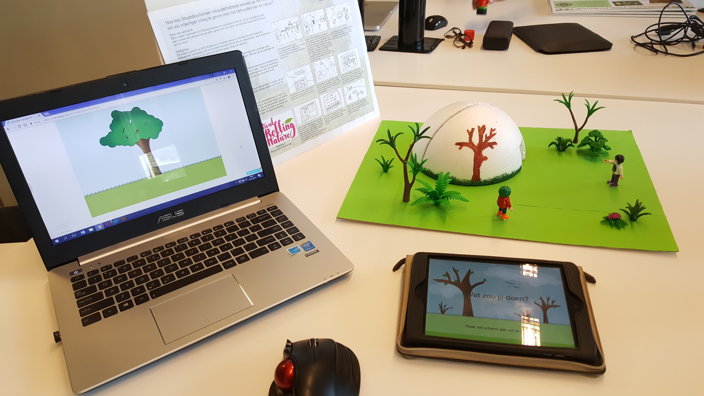
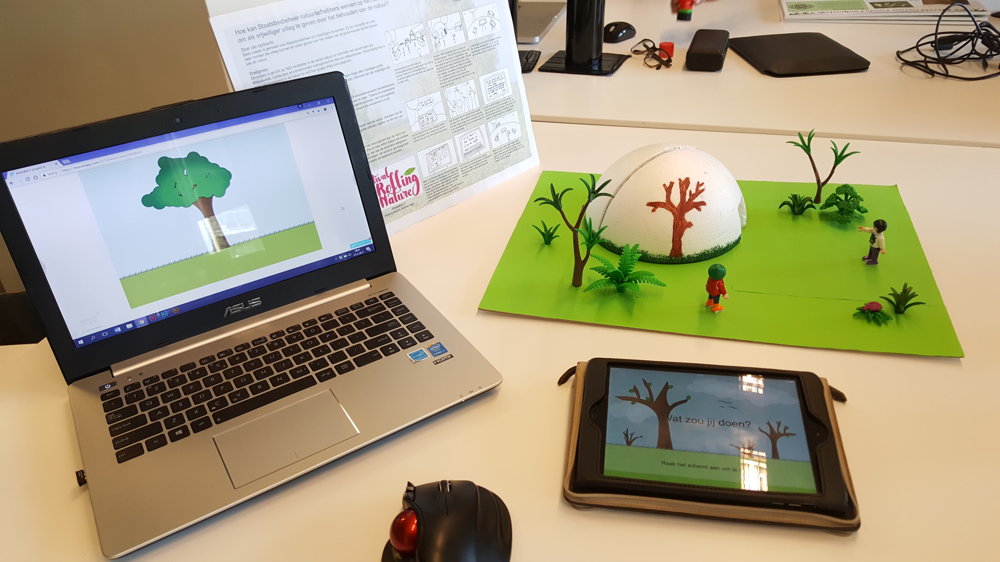

Dit fictieve project ging over vrijwilligers werving.
Kies een organisatie en bedenk een interactieve installatie waarmee je nieuwe vrijwilligers kunt werven.
Als organisatie koos ik Staatsbosbeheer.
Deze organisatie heeft vrijwilligers nodig voor het geven van informatie over natuurbeheer.
Niet iedereen begrijpt de manier waarop Staatsbosbeheer de natuurgebieden onderhoudt.
Met de installatie die ik gemaakt heb krijgt de gebruiker meer duidelijkheid in de keuzes die gemaakt moeten worden en de stappen die daar bij horen.
De installatie die ik gemaakt heb, bestaat uit een grote koepel met aan de buitenkant een animatie van een natuurgebied dat langzaam verandert.
Van mooie bomen met veel bladeren en groen gras naar bomen met kale takken en verdord gras.
Als je de koepel binnenloopt staan er 3 pilaren met een scherm erop.
Er kunnen 3 mensen tegelijkertijd gebruikmaken van de installatie.
De binnenkant van de koepel werkt net zoals de buitenkant met een animatie die langzaam verandert.
Aan de binnenkant heeft de gebruiker echter invloed op de manier waarop het natuurgebied verandert.
Op de schermen krijgt de gebruiker situaties voorgelegd die Staatsbosbeheer in de natuurgebieden daadwerkelijk tegen kan komen.
De gebruiker krijgt bij deze situatie 3 keuzes: aanpassen, weghalen of niets doen.
Aan de hand van de gekozen antwoorden zal de binnenkant van de koepel veranderen en komt er een nieuwe situatie in beeld.
Na een aantal situaties doorlopen te hebben, krijgt de gebruiker een overzicht van de staat van het natuurgebied.
Hierna volgt waarom het belangrijk is om de keuzes van Staatsbosbeheer uit te leggen.
Met een call to action kan de gebruiker zich aanmelden als vrijwilliger.
Mijn volledige verslag over dit project is te vinden in mijn procesboek.


 
